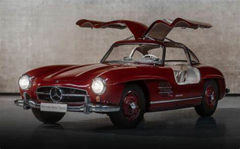

-
1954 | Mercedes-Benz 300 SL "Gullwing"

The 1954 Gullwing was born from motorsports success, featuring the iconic "gullwing" doors and lightweight design. Its legacy continues with modern iterations of the SL family.
-
1963 | Mercedes-Benz 600 "Grand Mercedes"
 Launched in 1963, the Grand Mercedes represents luxury and prestige, showcasing cutting-edge technology and a unique design.
Launched in 1963, the Grand Mercedes represents luxury and prestige, showcasing cutting-edge technology and a unique design. -
1968 | Mercedes-Benz "Stroke 8"
 The "Stroke 8" models, introduced in 1968, are known for their robust build and reliability, offering a blend of performance and comfort.
The "Stroke 8" models, introduced in 1968, are known for their robust build and reliability, offering a blend of performance and comfort. -
1972 | Mercedes-Benz S-Class 116
 The 1972 S-Class 116 marked the beginning of a new era in luxury, featuring advanced engineering and unparalleled comfort.
The 1972 S-Class 116 marked the beginning of a new era in luxury, featuring advanced engineering and unparalleled comfort. -
1977 | Mercedes-Benz 123 Series Estate
 The 1977 123 Series Estate, launched in 1976, quickly became a family favorite due to its spacious interior and versatile design.
The 1977 123 Series Estate, launched in 1976, quickly became a family favorite due to its spacious interior and versatile design. -
1979 | Mercedes-Benz G-Class
 Launched in February 1979, the G-Class is a rugged off-road vehicle that combines luxury with the capability to tackle any terrain.
Launched in February 1979, the G-Class is a rugged off-road vehicle that combines luxury with the capability to tackle any terrain. -
1982 | Mercedes-Benz 190 E
 The 190 E, introduced on December 8, 1982, offers compact dimensions and improved fuel efficiency while maintaining Mercedes' renowned quality.
The 190 E, introduced on December 8, 1982, offers compact dimensions and improved fuel efficiency while maintaining Mercedes' renowned quality.